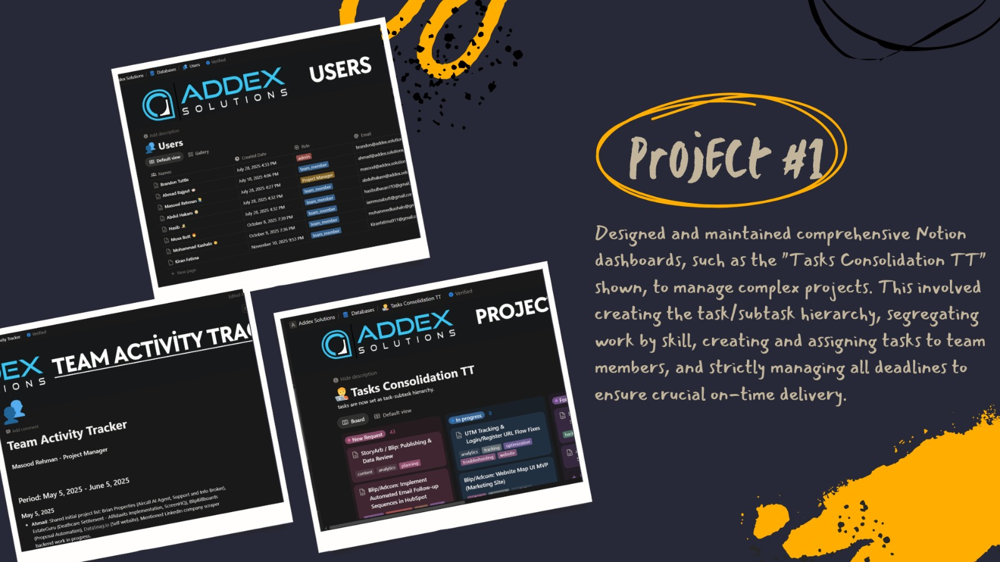

Project 1:Full Notion Ecosystem & Team Operations Lead
Addex Solutions | May 2025 – Present
Led the transformation of Addex Solutions’ operations by designing and managing a comprehensive Notion workspace, centralizing all workflows, tasks, and team activities.
Features:
- Tracker: Built a task/subtask hierarchy with skill-based task assignments and deadline tracking.
- Team Activity Tracker: Developed a real-time progress tracking system with automated updates for enhanced visibility.
- User Database: Created role-based access and streamlined onboarding/offboarding workflows.
- Trello to Notion Migration: Led the successful transition from Trello to Notion, training 8+ team members.
- Daily Standups & Task Management: Facilitated daily standups, assigned tasks, and enforced deadlines to ensure project progress.
Gallery:

Back to Portfolio